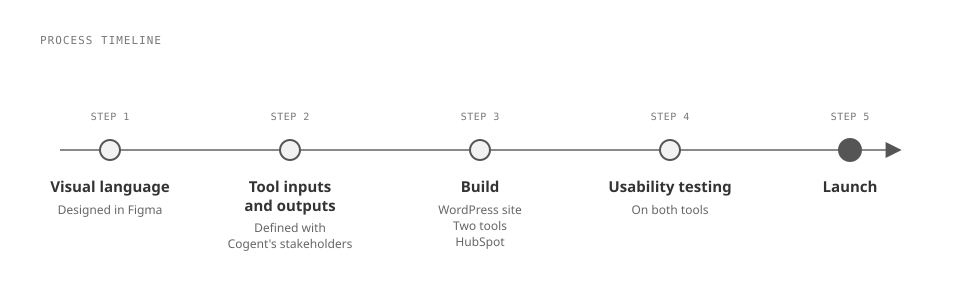
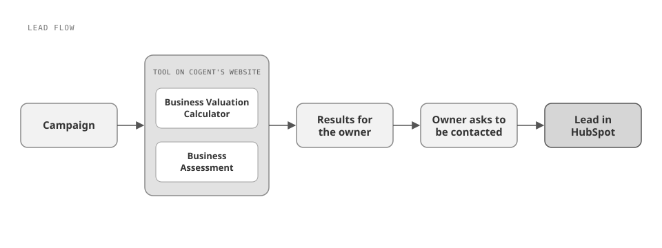
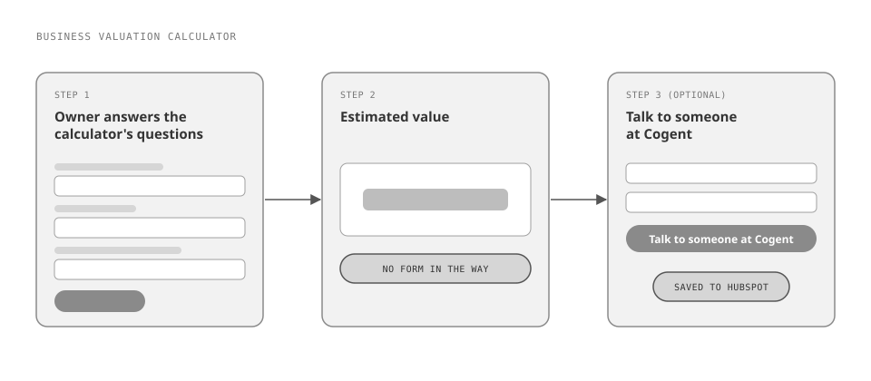
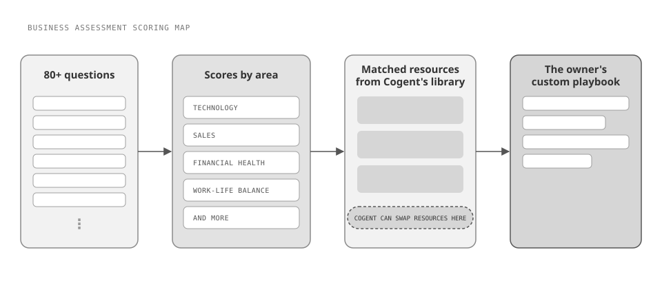

Cogent Analytics, a consultancy for small business owners, had a dated website on an old platform and an immature CRM, while its executive suite was pushing marketing for better qualified leads. Over about 16 weeks at Slide UX, I led the website redesign and rebuild on WordPress and designed and built the two tools marketing wanted at the center of its new-client campaigns: an ungated Business Valuation Calculator that shows owners what their business is worth right away, and an 80+ question Business Assessment that turns an owner's answers into a custom playbook from Cogent's resource library. I also built a new HubSpot environment to capture the leads the tools brought in. In the first quarter after launch, Cogent's qualified leads rose by more than 100%.

Cogent Analytics serves small business owners. It's a consultancy that works as more than that: it integrates itself into a business and helps drive outcomes toward the owner's goals.
Everything about its web presence was dated: the look of the site, the old platform it ran on, and how mature its CRM was. The site wasn't working as a marketing or lead-capture tool.
The request came from Cogent's marketing department, with pressure from the executive suite to start generating better qualified leads. Marketing already had the idea: new tools that put something tangible and useful in the hands of small business owners, living on the website, with campaigns driving traffic to them. Those tools were a big part of Cogent's new-client acquisition campaigns. Their job was to start building trust with owners and earn their business for the consultancy.
Cogent came to an agency because it had a very specific outcome in mind. The project ran about 16 weeks.
I ran point as the client-facing project lead at Slide UX, and I designed and developed as well.
The first move was deciding on the visual language of the new website. We designed the site in Figma, which kept collaboration open between Cogent's stakeholders and our team. I also made animations for the site using Figma Make and Claude Code together.
Next, we defined the inputs and outputs of the two tools with Cogent's stakeholders, who had very firm ideas about how each tool should work. I concepted the tools in Claude Code and implemented the output in WordPress. Alongside the tools, I built a new HubSpot environment so Cogent could capture the leads they brought in, a step up from the CRM it had before.
The hardest part was the Business Assessment. It had more than 80 questions and many different outcomes, and every score had to tie to exact resources in Cogent's resource library. It also had to stay dynamic and easy for Cogent to manage, so the client could update those resources later on its own (see Decision 03).
Before launch, we ran usability testing on both tools to validate that owners could use them.


Custom-built tools instead of out-of-the-box plugins
I built both tools custom.
Considered instead: off-the-shelf WordPress plugins. We tried many of them before landing on a custom build.
Cogent had a very specific outcome in mind, and its stakeholders had firm ideas about what each tool should take in and give back. The plugins couldn't deliver that, so building custom was the trade we made: more to design and build on our side, in exchange for tools that worked the way Cogent needed.
An ungated Business Valuation Calculator
I left the calculator's results ungated: owners got a sense of what their business is currently worth without handing over contact details first. Once they had their results, owners could ask to be put in touch with someone at Cogent, and their information was saved to HubSpot.
Considered instead: putting the results behind a contact form, the usual lead-capture move.
The tool's purpose was to put value in owners' hands and demonstrate Cogent's value right away. A valuation kicks off plenty of conversation, especially with owners looking to exit their business, so the contact request came after the value, not before it. The calculator itself was simple to build; the decision was about where to ask for the lead.

An assessment Cogent can keep updating itself
The Business Assessment helps owners see what they're doing well and where there's room to improve. Cogent uses it as the foundation of a playbook toward the owner's goals, across areas like technology initiatives, sales, financial health, and the owner's work-life balance. With more than 80 questions and many possible outcomes, I tied the scores to exact resources in Cogent's resource library, so each owner got a custom-made playbook. I built that mapping to be dynamic, so Cogent could update its resources down the road without coming back to us.
Considered instead: fixing each outcome to the resources that existed at launch.
Cogent produces a large and growing library of resources for small business owners, and an assessment wired to a frozen set of them would go stale. Keeping it dynamic and easy to manage made this the hardest part of the project, and we took that on.

Taking on the tools myself
The designer and developer focused primarily on the website, so I picked up the tools that would live on it: I designed and built both tools and the new HubSpot environment, and did development on the WordPress site as well.
Considered instead: having the designer and developer take on the tools after the website.
Splitting the work this way made the most of our resources and the timeline.
"Qualified leads rose by more than 100% in the first quarter after launch."
The redesigned WordPress site launched with both tools live on it and a new HubSpot environment capturing the leads they brought in, about 16 weeks after the project started. Cogent's marketing team now had tools that give small business owners something useful up front, from a valuation to a custom playbook, and campaigns to drive owners to them.
In the first quarter after launch, Cogent's qualified leads increased by more than 100%.